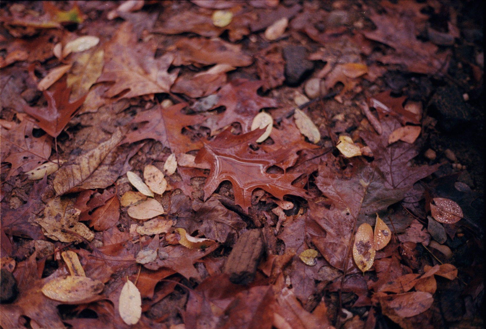

Baltimore, November 2022. Kodak Portra 400
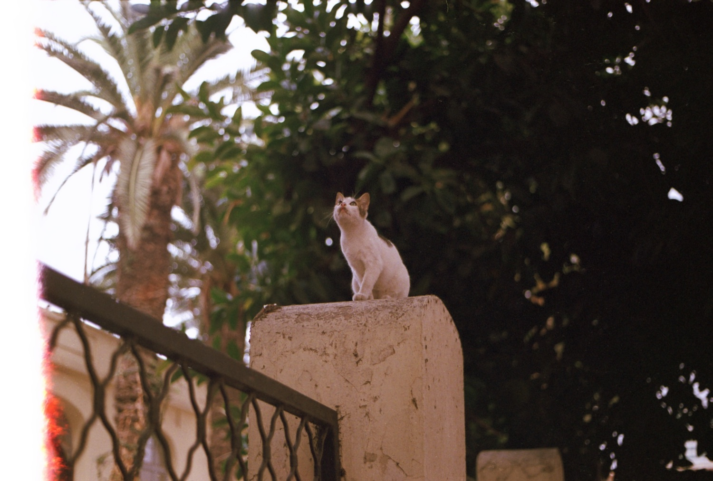Casablanca, October 2022. Kodak Portra 400
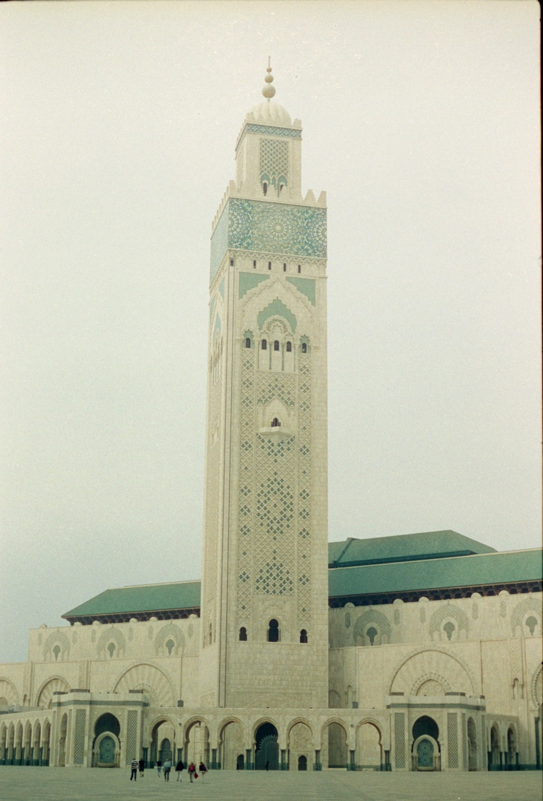Casablanca, October 2022. CineStill 400D
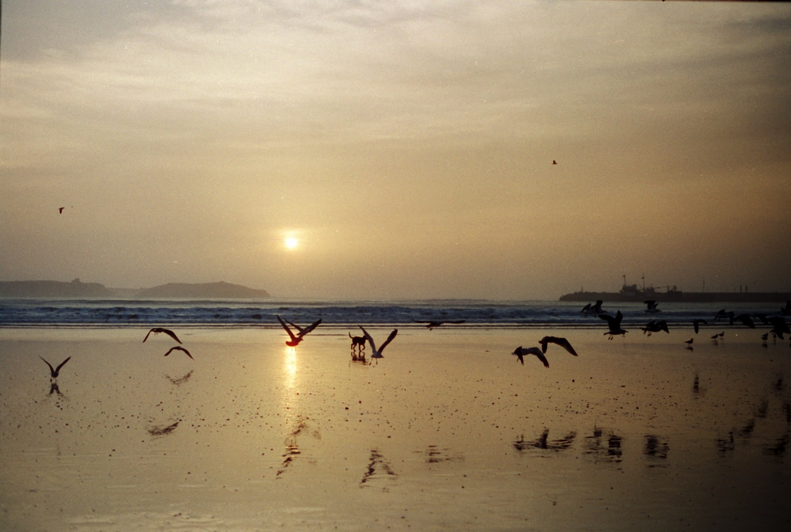Essaouira, October 2022. CineStill 400D
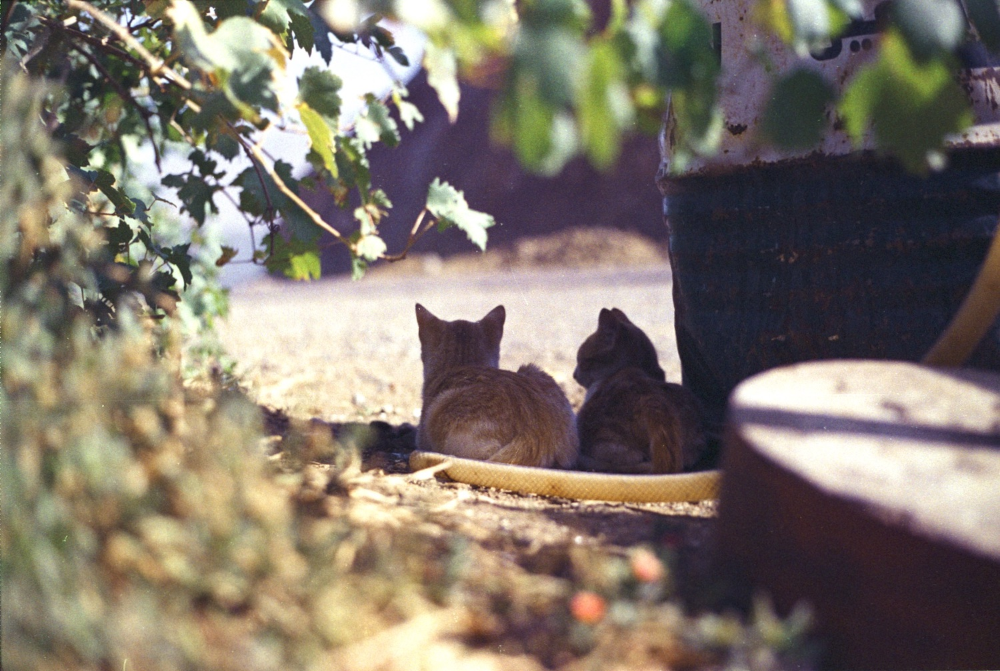Marrakech, October 2022. Kodak GC 400-8
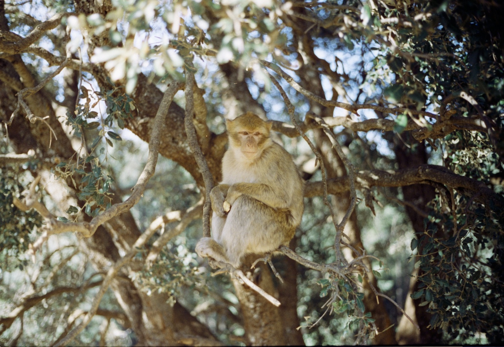Atlas Mountains, October 2022. CineStill 400D
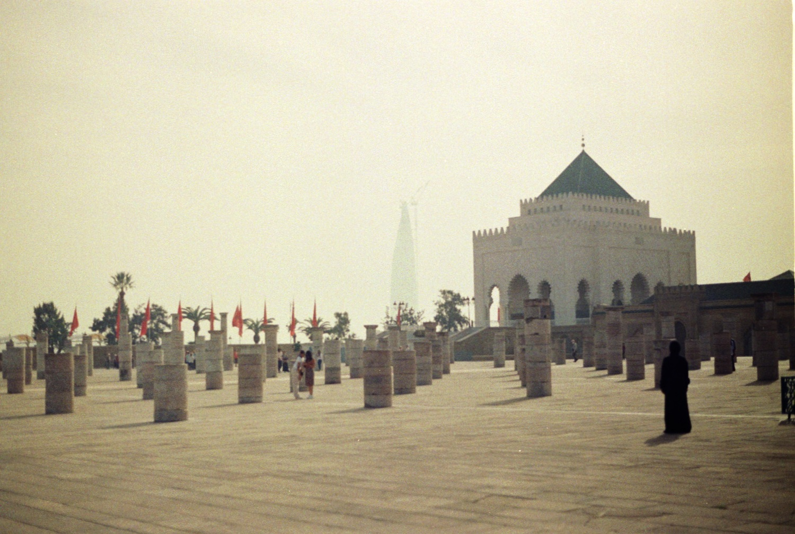Rabat, October 2022. Kodak GC 400
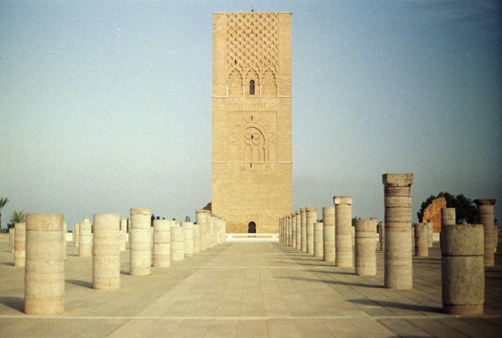Rabat, October 2022. Kodak GC 400
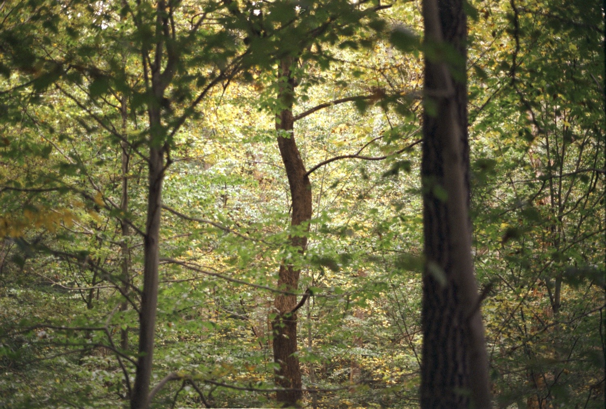Washington DC, October 2022. Fujifilm 200
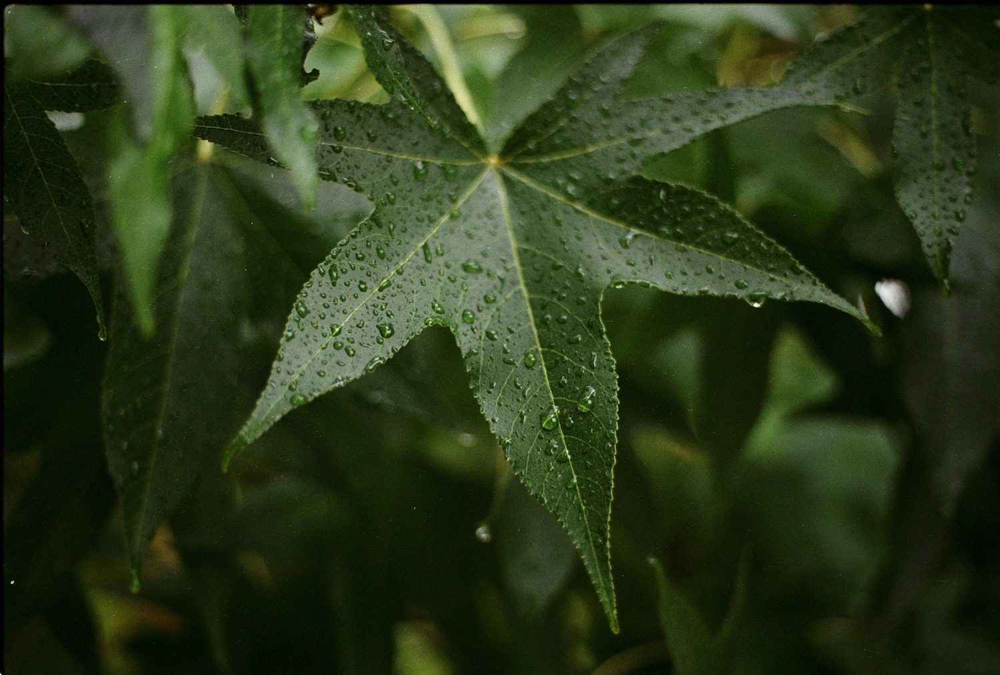Baltimore, September 2022. Kodak GC 400
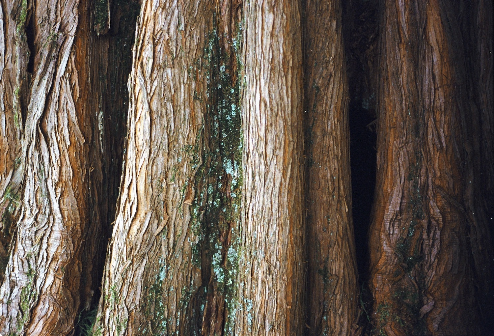Baltimore, September 2022. Kodak GC 400
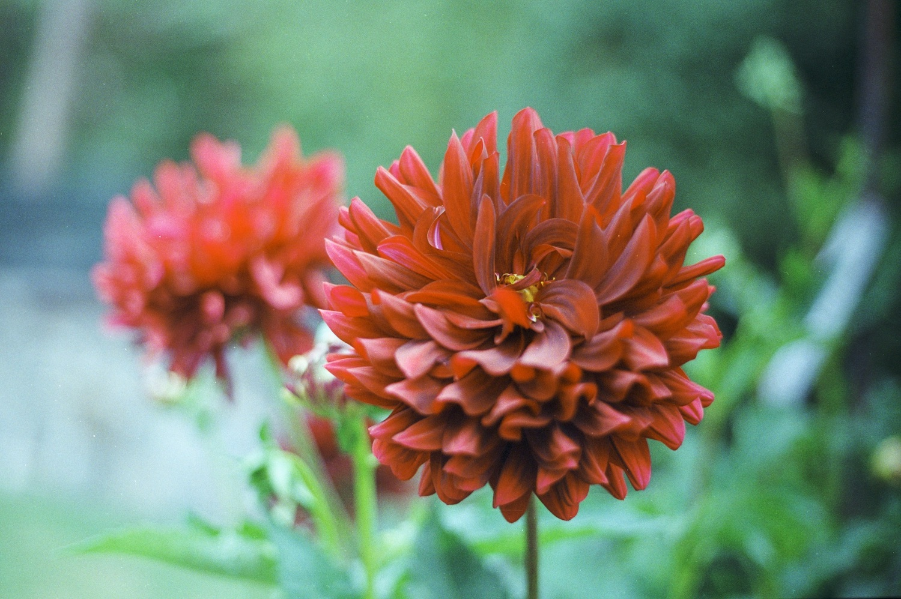Baltimore, September 2022. Kodak GC 400